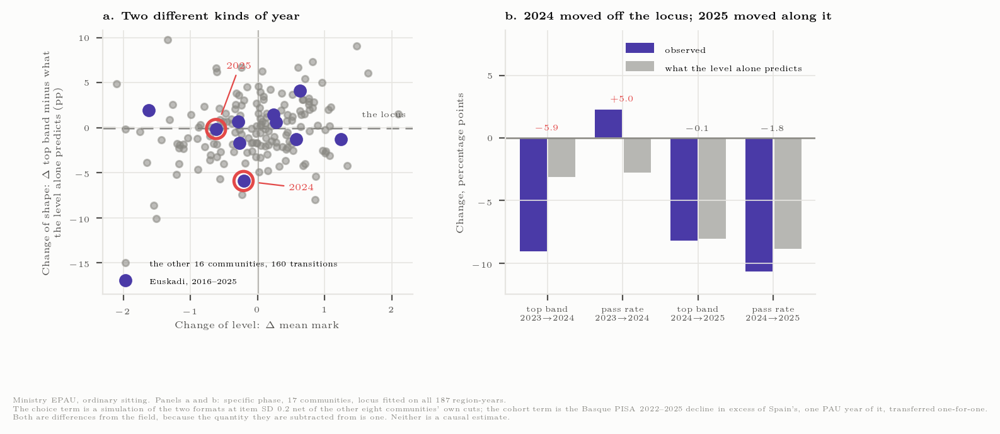
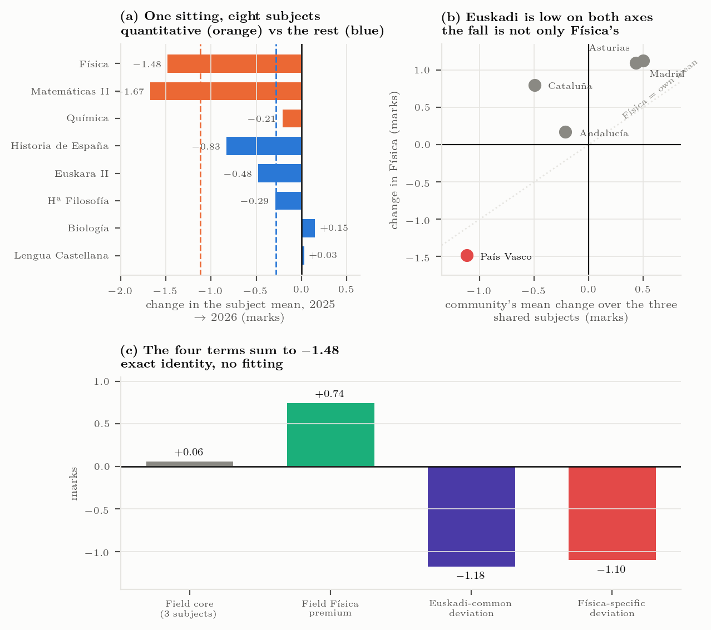
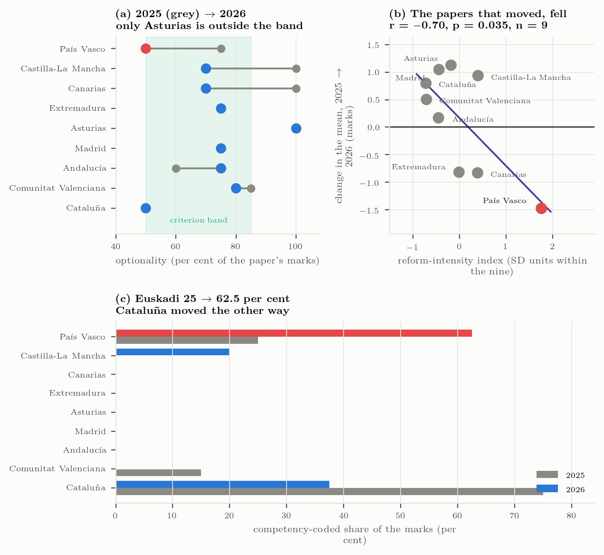
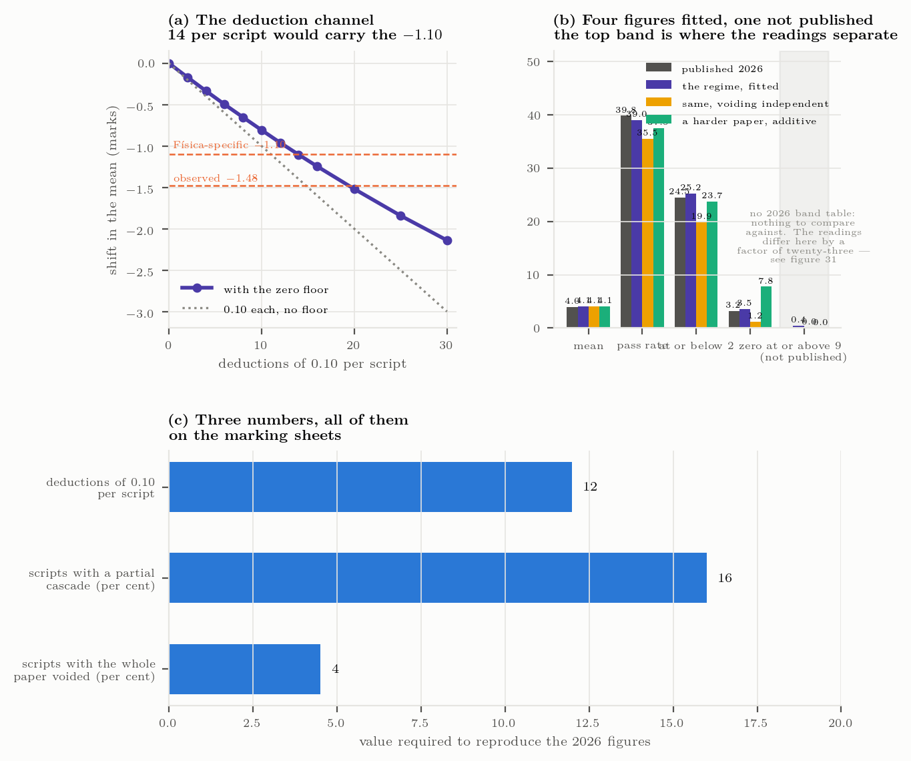
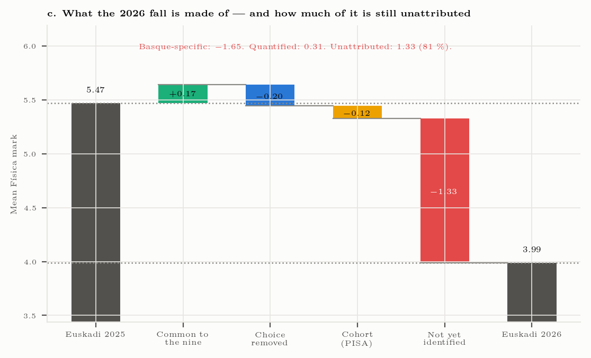
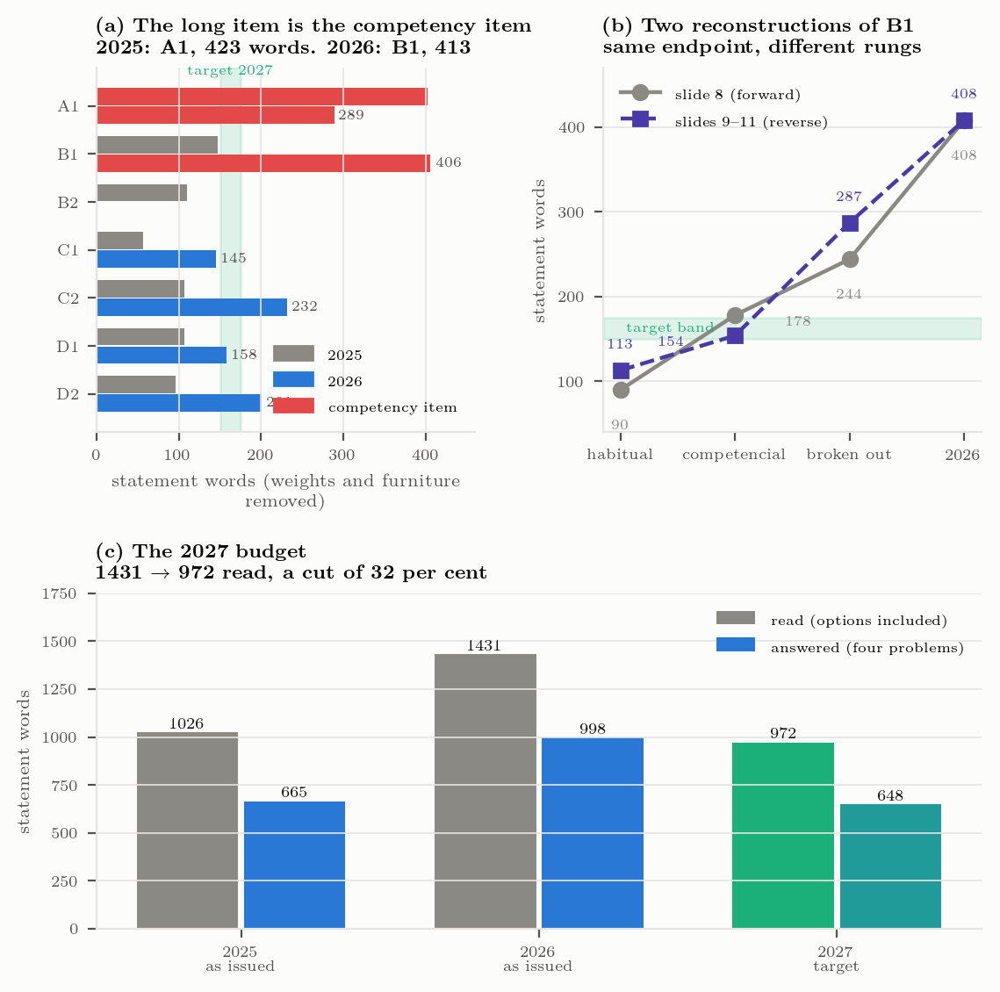

When a national reform cannot explain a regional outcome
Decomposition and the identification limits of published university-entrance aggregates
In June 2026 the mean mark in Physics at the Basque university-entrance examination fell to 3.99 from 5.47, the lowest value in a sixteen-year series and a one-year change of \(-1.48\) marks. The explanation offered was the national competency-based reform of RD 534/2024. Arithmetic refutes it: the reform applied in all seventeen autonomous communities in both years, and six of the nine communities reporting a 2026 result rose under it. A national cause cannot produce opposite signs in the same year.
This article decomposes the fall using only published aggregates. Against the nine-community field, \(-1.65\) marks are region-specific, and none of the 2025 fall was. A balanced eight-subject panel splits the change exactly, with nothing fitted, into a field term of \(+0.80\), a component of \(-1.18\) common to all of the region’s quantitative subjects, and \(-1.10\) specific to Physics. A band locus fitted across 187 region-years separates changes of location from changes of shape and identifies 2024, not 2026, as the year the distribution changed shape.
Withdrawn optionality (\(-0.20\)) and an externally measured cohort term (\(-0.12\)) can be bounded. The remaining \(-1.33\) cannot: paper difficulty, marking severity, reading load and newly examined content each displace the whole distribution downward, so every function of that distribution takes the same value under all four. A marking-regime simulation reproduces between 59 and 87 per cent of the Physics-specific fall depending on assumptions the published data cannot adjudicate. The result is a quantified limit on what aggregate educational statistics can identify, and a statement of the datum — marks at sub-task level — that would remove it.
university entrance examinations, educational assessment, decomposition, identification, curriculum reform, physics education
1 Introduction
In June 2026 the mean mark obtained in Physics at the ordinary sitting of the Basque university-entrance examination was 3.99 out of 10, from 2 066 candidates, with 39.8 per cent reaching the pass mark. The corresponding values were 5.47 in 2025 and 6.09 in 2024. The 2026 figure is the lowest in the sixteen years for which the series exists, and it lies below every regional Physics mean recorded in eleven years of national statistics with the single exception of Canarias in 2019. The one-year change, \(-1.48\) marks, is matched or exceeded in only seven of the 170 year-to-year changes available in the national panel.
The explanation advanced when the result became public was the competency-based examination model introduced for all Spanish university-entrance examinations by Royal Decree 534/2024 (Gobierno de España, 2024). The attribution is natural: the reform was recent, it was substantial, and it coincided with the fall.
It is also refuted by the data that were already public when it was made. The decree applied in all seventeen autonomous communities, in both 2025 and 2026. Of the nine communities that had published a 2026 Physics mean at the time of writing, six rose — by between \(+0.17\) and \(+1.13\) marks — under the same decree in the same year that one community fell 1.48. A cause common to all seventeen cannot produce movements of opposite sign among them. Whatever the decree did, it is not what happened in Physics in the Basque Country in 2026.

Figure 1 states the refutation without recourse to a statistic. That refutation is cheap, and it leaves the substantive question open. This article addresses it in three steps. First, the fall is decomposed into the parts that published aggregates can separate: the part shared with the rest of the country, the part common to a region’s quantitative subjects, and the part specific to one subject. This is arithmetic, not modelling, and the terms sum to the observed change by construction. Second, the components of the region-specific residue that admit a defensible magnitude are bounded. Third, and principally, the article establishes that the remainder — four fifths of the region-specific change — cannot be attributed to any of its candidate causes using published data of any kind, and quantifies that limit.
The third result is the contribution, and it is general. The candidate mechanisms for a fall of this kind — a harder paper, a stricter marking regime, a heavier reading load, content examined for the first time — are not merely difficult to separate. They are collinear in every statistic that is published: each displaces the whole distribution downward, each lowers the mean, each reduces the pass rate and thins the upper bands. Aggregate educational statistics do not contain the information needed to distinguish them, and no further analysis of those aggregates will supply it. The article makes that limit explicit, gives it a magnitude, and identifies the one datum that would remove it.
2 Data
Four bodies of evidence are used, and they are not interchangeable. Each is described with its provenance and its limitations, because several of the article’s conclusions turn on what a given source can and cannot support.
2.1 Official national statistics
The EPAU/SIIU cubes published by the Spanish Ministry of Universities give, for each autonomous community and each year from 2015 to 2025, the mean mark, the pass rate and the distribution across grade bands for every examined subject (Ministerio de Ciencia, Innovación y Universidades (SIIU), 2026). This is the only source in which all communities are measured on the same basis. It yields a balanced panel of 187 community-year observations (17 communities × 11 years) and 170 year-to-year transitions (17 × 10), which are the reference populations for every rank statement in this article.
The 2026 cube is not published until June 2027. Every 2026 figure used here therefore comes from elsewhere, and is marked as such wherever it appears.
2.2 The 2026 cross-section
Nine of the seventeen communities had published a 2026 Physics mean at the time of writing. These were assembled individually from university and regional government publications (Comunidad de Madrid, 2026; Euskal Herriko Unibertsitatea, 2026; Generalitat de Catalunya, 2026; Generalitat Valenciana, Conselleria d’Educació, Universitats i Ocupació, 2026; Junta de Andalucía, 2026; Universidad de Oviedo, 2026). Two were recoverable only from interactive dashboards that no search engine indexes.
The nine are not a random sample of the seventeen, and are not treated as one. They are used for a single purpose, described in §3.1: distinguishing a year in which every community moved from a year in which one moved alone. Each figure carries a quality tier — official statistic, institutional presentation, or press report — and the single press-level figure is excluded from every calculation on which a conclusion depends.
2.3 The examination papers
Every exercise and option of the eighteen ordinary papers set in 2025 and 2026 by the nine reporting communities — 146 items — was coded against the competency criteria published by the examining authority, recording for each item whether it requires a numerical result, whether it carries substantive real-world context, whether it demands explanation or judgement, and what proportion of the paper’s marks a candidate may decline to attempt. A second coder repeated the exercise blind, giving \(\kappa = 0.76\) on the competency flag. The complete archive of the region’s own papers since 2010, 34 papers, was read in the same way.
2.4 An externally scaled instrument
PISA measures the same students at age fifteen, on a scale fixed outside any national examination system, and its 2025 round was published on 8 September 2026. It is used once, in §4.6, to bound a cohort term. Its cohorts and the examination cohorts are aligned explicitly rather than assumed to correspond.
2.5 What is not available
Three things would resolve most of what this article shows to be unresolvable, and none of them is published: marks at the level of the individual sub-task, marks disaggregated by marking panel, and the 2026 grade-band table for Physics — the last of which had been published in every preceding year. Their absence is not incidental to the argument; §5 shows that it is the argument.
3 Methods
3.1 Reference frames
A one-year change in an examination mean has no interpretation on its own, because the examination changes every year. Three reference frames are therefore reported throughout, and they answer different questions.
The year-on-year frame compares 2026 with 2025. The baseline frame compares 2026 with the region’s own 2015–2019 mean, before the pandemic-era relief measures. The field frame compares the region’s change with the mean change of the nine communities that published a 2026 result.
Only the third can distinguish a national movement from a regional one, which is the distinction on which the refutation in §1 rests. It is constructed as \(\Delta_{\text{specific}} = \Delta_{\text{region}} - \Delta_{\text{field}}\), where the field mean includes the region under study. Including it is the conservative choice: excluding it would enlarge the region-specific term.
3.2 The band locus
A change in a mean and a change in the shape of a distribution are different events, and a mean cannot distinguish them: candidates leaving the top band while others arrive from below can leave the mean almost stationary.
To separate them, the share of candidates in each grade band is regressed on the mean across all 187 community-year observations. The resulting curve — the locus — gives the band share an ordinary distribution exhibits at a given mean. For any observed change in the mean, the locus predicts the band change that would accompany it if only the location had moved. The difference between the observed and predicted band change is the movement of shape, net of location.
The locus is descriptive. It carries no causal claim and no assumption about the underlying distribution beyond the regularity it measures directly.
3.3 The conditional top-band residual
The locus yields a per-band quantity. To rank a community-year against all others it is summarised as a single standardised figure: the share of candidates in the 8–10 band, conditional on the community’s mean, expressed relative to the other communities in the same year and standardised across the 170 transitions. A value of \(-1\) means a community has one standard deviation less top band than its own mean, read against its contemporaries, would lead one to expect.
3.4 The exact subject decomposition
The examining authority published means for eight subjects in both 2025 and 2026. Four comparator communities published three of the same subjects. This yields a balanced panel on which the observed change in Physics splits into four terms:
\[ \Delta_{\text{Physics}}^{\text{region}} = \underbrace{\overline{\Delta}^{\text{field}}_{\text{core}}}_{\text{field core}} + \underbrace{\left(\overline{\Delta}^{\text{field}}_{\text{Physics}} - \overline{\Delta}^{\text{field}}_{\text{core}}\right)}_{\text{field Physics premium}} + \underbrace{\left(\overline{\Delta}^{\text{region}}_{\text{core}} - \overline{\Delta}^{\text{field}}_{\text{core}}\right)}_{\text{region-common}} + \underbrace{\varepsilon}_{\text{Physics-specific}} \]
where “core” denotes the three subjects shared by all five communities. The identity is exact: the four terms sum to the observed change by construction, and nothing is fitted. Its value is that it separates a movement affecting all of a region’s quantitative subjects from one affecting a single subject, which no single-subject statistic can do.
3.5 The reform-intensity index
A national frame applied in seventeen places is seventeen different papers. To measure how far each community’s 2026 paper moved from its own 2025 predecessor, four movements are computed from the coded papers: the change in optionality (entered with its sign reversed, since reducing choice is the direction the national orientations prescribe), the change in the share of marks carried by competency-coded items, the change in the share carrying substantive context, and the change in the share that is contextualised. Each is standardised within the nine and the four are averaged.
Standardising within the nine makes the index a ranking device and not a scale with meaning of its own. It is reported with that restriction, and §4.4 states explicitly what it can and cannot establish with \(n = 9\).
3.6 The marking-regime simulation
The marking specification in force from 2025 defines seven classes of minor error, each attracting a fixed deduction, and a class of grave error that voids the sub-task in which it occurs. A linguistic component and a spelling rule apply to items that produce text, subject to a cap.
To bound the effect of applying that specification more completely in its second year than in its first, a candidate population is constructed non-parametrically from the published 2025 band distribution, so that the baseline reproduces the 2025 marks by construction rather than by assumption. Deductions are then applied at a given rate, with a floor at zero for each sub-task, and the resulting distribution is compared with what was observed. Two voiding regimes — cascading and independent — and a range of penalty distributions across candidates are examined, because the published data do not determine which holds.
The simulation is used to produce bounds, not an estimate. Its output is the range of the Physics-specific fall that a marking regime could account for under assumptions the published data cannot adjudicate between.
3.7 Statement length
Reading load is measured as the number of words a candidate must read in the statement of each item, counted on a fixed convention: mark allocations, rubrics and other recurring furniture are excluded, so that the measure reflects what must be read to understand the task. Both the load of the whole paper as issued and the load actually faced by a candidate exercising the available choice are reported, since they differ materially when optionality changes.
4 Results
4.1 The magnitude, in three frames
The three reference frames of §3.1 give values that differ by less than half a mark, so no conclusion in this article depends on the choice between them.
| Frame | Question | 2026 |
|---|---|---|
| Year on year | how far did the mean fall from 2025? | \(-1.48\) |
| Against the pre-COVID baseline | how far is 2026 from the region’s ordinary level? | \(-1.91\) |
| Against the nine-community field | how much is specific to the region? | \(-1.65\) |
The frames are not equivalent in what they permit. Only the third supports a claim about regional specificity, and it is the only one used for that purpose below.

Two features of Figure 2 bear on what follows. The pandemic relief measures were in force for two sittings, not one, and the second of them, 2021, produced the highest mean in the whole series (7.69) — 1.63 above 2022. Any baseline that includes those years is not a baseline. And the change of governing legislation in 2017 did not coincide with a change of examination model, which did not occur until 2020 and occurred then for reasons unrelated to the legislation. Legislative dates are therefore poor instruments for examination change in this setting.
4.2 Three distinct events, not one
The series contains three separable events, and conflating them is the most common error in reading it.
2024 changed the shape and barely moved the level. The mean moved \(-0.21\), in a series whose year-to-year standard deviation is 0.85 — that is, nothing. The distribution, however, moved a great deal. The 8–10 band fell 9.0 percentage points where the locus of §3.2 predicts 3.1 for a fall of 0.21 in the mean, and the pass rate rose 2.3 points where the locus predicts a fall of 2.8. Fewer candidates at the top, more just above the line, with the mean almost stationary.
Summarised by the conditional residual of §3.3, the region’s position moved \(-3.08\) standard deviations between 2023 and 2024: the second most negative of the 170 transitions in the national panel. On the combined size of both departures from the locus it ranks eleventh of 170. Both figures are reported; the event is large on either.

This matters because 2024 was the last sitting of the previous examination format, a year before the first paper set under the new national frame. Every test in this article that operates on the mean is blind to it, and all of them are correct: a mean cannot see candidates leave the top while others arrive from below.
2025 changed the level, and the change was national. The region lost 0.62; the nine-community field lost 0.65. Read against the field, there is nothing region-specific in 2025 at all — a difference of three hundredths of a mark.
2026 is region-specific. The field gained 0.17 while the region lost 1.48, so the region-specific component is \(-1.65\), and the whole of it falls in one year.
4.3 What the fall is made of, by subject
Figure 4 applies the exact decomposition of §3.4. The four terms sum to the observed \(-1.48\) by construction.
| Term | Marks | Interpretation |
|---|---|---|
| Field core | \(+0.06\) | what the three shared subjects did in the four comparators |
| Field Physics premium | \(+0.74\) | Physics above its own community’s mean, in all four |
| Region-common | \(\mathbf{-1.18}\) | what moved all of the region’s quantitative subjects together |
| Physics-specific | \(\mathbf{-1.10}\) | what is left for the Physics paper |

The result is that more than half of what separates this region from the field is not specific to Physics. In the same sitting, at the same institution, under the same marking specification, Mathematics II fell 1.67 marks — more than Physics — while Chemistry (\(-0.21\)), Biology (\(+0.15\)) and Spanish Language (\(+0.03\)) did not follow. A single-subject analysis of Physics cannot see this term and will attribute all of it to the Physics paper.
4.4 What the papers did
The nine 2026 papers differ from their own 2025 predecessors by very different amounts. On the index of §3.5 the region under study scores \(+1.76\) and ranks first of nine; the next community scores \(+0.39\) and the remaining seven sit at or below zero. Five of the six communities whose mean rose in 2026 carry negative index values.

Across the nine, the index and the change in the mean correlate at \(r = -0.70\) (\(p = 0.035\), \(n = 9\)). This is reported with an explicit caveat, because the caveat is as informative as the coefficient: removing the region under study reduces the association among the remaining eight to \(r = -0.40\) (\(p = 0.33\)). The relation is the single community. What the index establishes is not a dose-response across communities but the fact that one community implemented the national frame completely and alone, moving all four axes at once while the others moved one or none. With \(n = 9\) and the outcome concentrated in one point, this is consistency, not evidence of effect, and it is exactly what prevents the nine-community panel from testing the hypothesis it suggests.
Three specific movements are worth recording. The share of marks carried by competency-coded items rose from 25 to 62.5 per cent — the largest movement in the set, and the only one of that magnitude. Optionality was halved, with two of four problems carrying no choice at all; simulation of the two formats values that change at \(-0.26\) marks gross, and \(-0.20\) net of the optionality reductions the other communities made in the same year. Reading load rose 45 per cent, to approximately 1 430 words of statement. The 2026 paper is the only one of the eighteen that changed genre between the two years.
4.5 Bounds on the marking regime
2026 was the second year in which the marking specification of §3.6 was in force. A regime applied cautiously in its first year and fully in its second would reproduce the observed pattern — a negligible region-specific change in 2025 followed by a large one in 2026 — without any change in the specification itself. The hypothesis is therefore consistent with the timing, and the question is whether it is consistent with the magnitude.

Under a flat penalty the cost is 0.080 marks per deduction, so twelve deductions per candidate produce 0.96 marks, or 87 per cent of the Physics-specific \(-1.10\). Distributing the penalties unevenly across candidates — which is what any real marking regime does — reduces the yield, because marks cannot be taken from candidates who have none: across the plausible family of distributions the same twelve deductions yield between 0.65 and 0.89 marks, or 59 to 81 per cent.
Two further constraints narrow the space without closing it. Only sub-tasks that produce a numerical result can attract unit, prefix or rounding errors; the 2026 paper contains 27 to 32 sub-tasks, of which 14 to 19 are so exposed, which places twelve deductions at 0.67 per exposed answer and the twenty-one needed to carry the entire fall at 1.26 per exposed answer. The linguistic channel is capped by the specification itself at 1.00 marks, and a joint fit to the published quantities values a single error at 0.044 marks, which crowds that channel to a small fraction of its cap.
The conclusion of this subsection is a range, not a number: a marking regime applied more completely in its second year can account for between 59 and 87 per cent of the Physics-specific fall, and the published data do not determine where in that range the truth lies. The single quantity that would discriminate — the 2026 grade-band distribution, published in every prior year — is not available.
4.6 The cohort term
PISA 2025 places the region at 458.5 in science against a national 477.1, a fall of 21.0 points from 2022. Converted at one standard deviation of PISA to one of the examination, and prorated over the two years separating the examination cohorts, this yields a cohort term of 0.18 marks gross and 0.12 marks in excess of the national movement.
The more important result concerns rates rather than levels. The per-cohort-year change is not a slope but a sequence of steps: \(+3.7\), \(-7.5\), \(+1.4\), \(-2.0\), \(-7.0\) points per cohort-year across successive rounds. A linear extrapolation would produce an honest confidence interval around the wrong model. Moreover the cohort term, at 0.12 to 0.18 marks, is between five and seven times smaller than the 0.85-mark standard deviation of the paper-to-paper variation it would have to be read against. It is real, it is externally measured, and it is far too small to be the event.
5 The identification limit
5.1 Why the candidates cannot be separated
Four mechanisms remain in contention for the region-specific residue: the content and difficulty of the paper, the severity with which it was marked, the reading load it imposed, and the syllabus content examined for the first time after a period in which optionality had allowed candidates to avoid it.
These are not merely hard to disentangle. They are collinear in every statistic that is published. Each of the four displaces the entire distribution downward. Each lowers the mean. Each reduces the pass rate. Each thins the upper bands and thickens the lower ones. Two of them — the conversion of the paper to the competency format and the reopening of the syllabus — are moreover properties of the same paper in the same sitting, and were introduced together.
A published aggregate is a function of the distribution. If four mechanisms produce the same displacement of the distribution, then every function of that distribution takes the same value under all four, and no amount of further analysis of published aggregates can separate them. This is a statement about the information content of the data, not about the sophistication of the method. It would remain true given unlimited analytical resources and unlimited time.
5.2 The attribution budget
Table 3 states the position for the region-specific \(-1.65\), with the status of each row given explicitly.
| Component | Marks | Status |
|---|---|---|
| Common to the country | \(+0.17\) | observed |
| Optionality withdrawn, net of other communities’ reductions | \(-0.20\) | quantified by simulation |
| Cohort, in excess of the national movement | \(-0.12\) | quantified, upper bound |
| Paper content and reading load | — | not identified (one signal, seen twice) |
| Marking severity | — | not identified (bounded at 59–87 % of the Physics-specific term) |
| Panel-to-panel severity and spread | — | not identified |
| Newly examined content | — | not identified (bounded: optional in June) |
| Composition of those who sat | — | not identified; runs against the fall |

Two components can be given a defensible magnitude and together they come to \(-0.31\) marks, under a fifth of the region-specific change. The remaining \(-1.33\), four fifths of the total, is not attributed to anything.
That is a finding rather than an omission. The preceding subsection establishes that it is not attributable, and §4.5 shows what a partial attribution looks like when it is attempted: the marking regime alone spans 59 to 87 per cent of the Physics-specific term, a range wide enough that adopting either end would change the conclusion, and nothing published adjudicates between them. Summing the upper bounds of the individual channels exceeds the quantity to be explained by \(+0.38\) marks, which is a direct demonstration that the channels overlap and that treating them additively over-attributes.
5.3 Where the reading load lies
The 45 per cent increase in reading load is naturally attributed to the competency items, on the assumption that narrative framing is what lengthens a statement. Direct measurement of the printed statements does not support that attribution. In the longest item, the narrative accounts for 71 words against 70 in its 2025 predecessor, while the demand text — the part that states what is to be done — rises from 88 words to 181. The additional load is in the task specification, not in the context that surrounds it. The examining authority’s own worked reconstruction of the same item, which reaches 66 words for the broken-out step alone, corroborates the measurement independently.

This correction does not alter the budget — reading load remains unidentified either way — but it matters for what would follow from a decision to shorten statements, since shortening the narrative and shortening the demand are different interventions with different costs.
5.4 The identifying datum
The collinearity is a property of aggregates, not of the examination. At the level of the individual sub-task the four mechanisms separate cleanly, because they act on different sub-tasks and leave different signatures.
A marking regime applied more completely acts on sub-tasks that produce a numerical result and leaves the others untouched; the exposure measurement of §4.5 makes this testable, since 14 to 19 of the paper’s 27 to 32 sub-tasks are so exposed and the remainder are not. A harder or longer item depresses performance on that item for all candidates. Newly examined content depresses performance on the sub-tasks that examine it, and on no others. Reading load acts in proportion to the length of the statement each sub-task carries.
Marks at sub-task level, for a sample of scripts, therefore identify what no aggregate can. Marking panel identifiers would separate a fifth mechanism — between-panel severity — which the aggregate likewise cannot see. Both are generated as a by-product of any marking process that records sub-task marks. The proposition established here is narrow: these quantities, and nothing already published, constitute the information the identification requires.
6 Discussion
6.1 Reference frames change the headline
The figure that circulated, \(-1.48\), is the year-on-year change. Measured against the region’s own 2015–2019 baseline the 2026 fall is \(-1.93\), a third larger, because 2025 already sat 0.45 below that baseline. The series did not fall once; it fell twice, and only the second fall was reported.
The same arithmetic cuts the other way nationally. Against pre-COVID baselines, six of the nine communities sit above their own norm in 2026. A reader told that “Spain is where it was” and a reader told that “Physics collapsed” can both be shown the same ministry series, because the two statements differ only in the reference year. The year-on-year framing is the one that misleads, because 2024 was not an ordinary year to measure from: it was the last sitting under relief-era optionality and, as §4.2 shows, the year the distribution changed shape.
The general point is that in a system where the instrument is rebuilt annually, every claim of the form “marks fell by \(x\)” is incomplete unless it carries its reference point, and claims that omit it are not comparable even when they use the same source.
6.2 What can and cannot be projected
Interest in a result of this kind is usually prospective. The findings above bear directly on what may be projected, and the answer is: very little.
The cohort term is externally measured and real, but it is between five and seven times smaller than the paper-to-paper variation against which it must be read, and it moves in steps rather than along a slope (§4.6). A linear projection of it would therefore be a precise interval around a model the data reject.
Scenarios can nonetheless be stated, provided they are labelled for what they are: arithmetic under an assumption, not forecasts. If the 2027 paper resembles the 2025 paper, the cohort term alone places the mean near 5.11; if it resembles the 2026 paper, near 3.81. The error bar on either is the two-year band of ordinary paper-to-paper variation, \(\pm 2.37\) marks — wider than the distance between the two scenarios. That the interval swallows the difference between the scenarios is not a defect of the calculation. It is the result: the paper, not the cohort, determines the outcome, and the paper is a decision rather than a trend.
6.3 What a reader may conclude
Three statements are supported. The 2025 fall was national, and the region moved with the country to within three hundredths of a mark. The 2026 fall is region-specific, at \(-1.65\) marks against the field, and slightly more than half of it is not specific to Physics but common to the region’s quantitative subjects. And four fifths of the region-specific change cannot be attributed to any mechanism with published data.
Three statements are not supported, though each has been made. That the national competency reform caused the fall: it applied everywhere and six of nine rose under it. That the cohort caused it: the externally measured cohort movement is an order of magnitude too small, and 5.6 per cent fewer candidates sat the subject in 2026, so composition works against the fall rather than for it. And that the marking regime caused it: that hypothesis is consistent with the timing and is bounded between 59 and 87 per cent of the Physics-specific term, which is not the same as being established at either end.
7 Limitations
The 2026 cross-section is nine communities assembled from sources of mixed quality, not a published statistic, and it is not a random sample of the seventeen. With \(n = 9\) the reform-intensity association is descriptive and collapses when the single extreme point is removed, as §4.4 states.
Every quantity in this article is a cohort statistic from a different examination, marked by different panels, in a system where the instrument changes annually. None of the comparisons is a causal estimate and none is presented as one. The simulation of §3.6 is a bounding exercise whose inputs — the rate at which deductions were applied and their distribution across candidates — are not observed; its output is a range precisely because those inputs are unknown.
The locus of §3.2 is fitted on 187 observations spanning a period that includes the pandemic relief measures. Those years are identified in Figure 2 and the sensitivity of the locus to their inclusion is reported in the appendix, but the panel is not long enough to exclude them and retain useful precision.
Finally, the article establishes that four fifths of the region-specific change is unidentifiable from published aggregates. It does not establish that no mechanism dominates — only that the published data cannot say which.
8 Conclusion
A single region’s Physics entrance mean fell 1.48 marks in one year while the comparator field rose 0.17. The national curriculum reform that was blamed applied equally to communities that rose, and cannot be the cause. Measured against the field, \(-1.65\) marks are region-specific, and an exact subject decomposition shows that \(-1.18\) of the region’s movement was common to all its quantitative subjects and only \(-1.10\) specific to Physics — so a single-subject analysis would misattribute more than half of the event.
Of the region-specific change, \(-0.31\) marks can be bounded: withdrawn optionality and an externally measured cohort term. The remaining \(-1.33\) cannot be attributed, because the four candidate mechanisms displace the distribution in the same direction and are therefore indistinguishable in any function of it. A simulation of the marking regime illustrates the size of the resulting indeterminacy: it accounts for anywhere between 59 and 87 per cent of the Physics-specific term depending on assumptions the published data cannot adjudicate, and summing the channels’ upper bounds over-attributes the quantity to be explained by \(+0.38\) marks.
The contribution is therefore a quantified limit on what published educational aggregates can identify, obtained on a case where the limit binds hard, together with a decomposition framework that isolates the part of an outcome that is genuinely subject-specific and a statement of the datum — marks at sub-task level — that would remove the indeterminacy. Systems that publish only aggregates should expect this limit to bind whenever more than one plausible mechanism moves the whole distribution in the same direction, which is to say in most of the cases that prompt an investigation at all.
Data and code availability
All source files, analysis scripts and figure code are published alongside this article. A clean run reproduces every table byte for byte and every figure pixel for pixel. The extended technical treatment referenced throughout reports the intermediate quantities and the diagnostic tests for each result.
Appendix A — Provenance and quality of the 2026 cross-section
| Community | 2026 source | Tier |
|---|---|---|
| País Vasco | institutional presentation of 6 July 2026 | institutional |
| Cataluña | Govern dossier, aptes basis | official |
| Madrid | regional publication, chart labels | official |
| Andalucía | Junta table | official |
| Asturias | university release | institutional |
| Comunitat Valenciana | regional publication | official |
| Castilla-La Mancha | interactive dashboard | official |
| Canarias | interactive dashboard | official |
| Extremadura | press report | press — excluded from conclusions |
Appendix B — Locus diagnostics
The locus of §3.2 is fitted across 187 community-year observations. The mean-band relation is strong and monotonic over the observed range; residual standard deviations are reported per band with the fit. The pandemic years 2020 and 2021 are the highest-leverage observations in the panel and are flagged as such; refitting without them changes the predicted band movement for a fall of 0.21 in the mean by less than half a percentage point, which does not alter the sign or the order of magnitude of the 2024 departure reported in §4.2.
The conditional residual of §3.3 is standardised across the 170 transitions. Because the standardisation is within-year, a common national movement does not enter it, which is the property that makes it usable for the comparison in §4.2.
Appendix C — Simulation specification
The candidate population is constructed non-parametrically from the published 2025 grade-band distribution, so that the simulated 2025 marks reproduce the published 2025 marks by construction. Sub-task marks are allocated within each candidate at a fixed item standard deviation, with sensitivity reported at 0.1, 0.2 and 0.3.
Deductions are applied at a specified rate per candidate, each at the fixed value the specification names, with a floor at zero for each sub-task; grave errors void the sub-task in which they occur, under both a cascading and an independent regime. Penalties are distributed across candidates by a kernel in the candidate’s own attainment level, normalised to unit mean, with over-dispersion examined separately. The linguistic component enters only on sub-tasks that produce text and is capped as the specification requires.
The reported output is the range of the Physics-specific fall reproduced across this space, not a point estimate, because the rate and the distribution of deductions are not observed.
Appendix D — Reproduction
Every figure and table in this article is produced from the cited data files by the published scripts. The figures shown here and the corresponding figures in the extended technical treatment are drawn by the same panel code at different page proportions, so the two cannot differ in any quantity — only in layout.